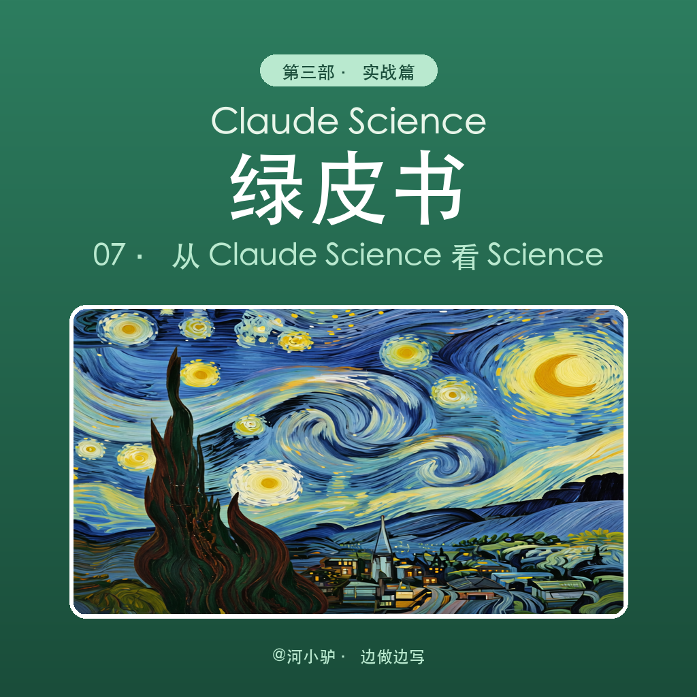

📦 7 Parts + Conclusion
👉 滑动
PART 01
引子
科研的三个卡壳点
PART 02
案例背景
为什么选乳腺癌 SVM
PART 03
五步法
科学工作流全景
PART 04
看产出
报告与图表
PART 05
Review
让结论经得起推敲
PART 06
科研→产品
Science 与 Code 分工
PART ///
写在最后
可信科研四层
搞科研和做产品是两件事：Claude Science 负责验证核心算法与科学流程，Claude Code 负责把验证过的东西工程化、产品化。
01
PART
引子：科研不是写代码，是培养一种思维
MINDSET · 什么是 Science 思维
很多人刚开始做科研时，会把科研等同于「写代码跑模型」。但真正的科研，核心是一种思维方式：
怎么把一个大问题拆成可验证的小问题？
怎么判断一个结果是真的有用，还是看起来漂亮？
怎么让别人相信你的结论，甚至把你的方法用起来？
这三个问题，本质上都在问同一件事：Science 思维是什么？
Claude Science 不是帮你写更多代码，而是帮你建立这种思维：把科学研究变成一个可拆解、可验证、可复现、可交付的流程。这一站，我们用乳腺癌 SVM 分类这个真实案例，走一遍科研到底在做什么。
02
PART
案例背景：为什么选乳腺癌 SVM？
CASE · 麻雀虽小五脏俱全
选这个案例，是因为它是一个「麻雀虽小，五脏俱全」的正式科研项目：
数据公开、可复现
Wisconsin Breast Cancer Diagnostic Dataset，sklearn 直接加载，569 个样本、30 维特征。
问题意义明确
辅助诊断，核心目标是减少漏诊。
方法经典但足够完整
数据探索、预处理、模型训练、调参、评估、解释，一个不少。
结果可解释
特征重要性对应病理学指标，能被专业人士理解。
一句话：这个案例能回答「一个真实科研项目，从头到尾应该怎么跑」。
03
PART
科学工作流五步法
WORKFLOW · 从打开代码到交付
一个正式的科学项目，不是打开 Jupyter 就写代码，而是按流程推进：
定义问题
用 SVM 对乳腺癌 FNA 图像特征进行分类，预测肿瘤是良性还是恶性。优化目标明确：最大化恶性召回率——宁可错杀，不可漏诊。
数据探索
加载数据后，先看分布、看相关性、看类别比例。这一步决定你后面会不会把错的数据喂给模型。
建模实验
对四种核函数（Linear、RBF、Poly-3、Sigmoid）分别独立调优，用交叉验证选出最优参数。
结果解释
不只看准确率，还要看混淆矩阵、ROC 曲线、特征重要性、PCA 投影。让结果说得通。
审查与交付
对照代码、图表、文字逐条核对，修 bug，最后输出报告、代码和产品化 Prompt。
04
PART
看产出：正式项目的报告和图表
OUTPUT · 数据、表格与图
流程跑完后，核心产出是一份研究报告。下面从报告中摘出关键内容。
4.1 数据集概况
| 属性 | 数值 |
|---|---|
| 总样本数 | 569 |
| 恶性（正类） | 212（37.3%） |
| 良性 | 357（62.7%） |
| 特征数 | 30 |
| 缺失值 | 0 |
30 个特征是 10 项细胞核形态学指标的三种聚合：均值、标准误、最差值。基础指标包括半径、纹理、周长、面积、光滑度、紧密度、凹陷度、凹陷点数、对称性、分形维数。

— 图 1：类别分布与关键核形态学特征按诊断的直方图
恶性肿瘤在面积、周长、凹陷度等指标上整体右移——细胞核更大、更不规则。

— 图 2：均值组核特征 Pearson 相关热力图
半径、周长、面积高度共线（r ≥ 0.99），凹陷度与凹陷点数也强相关（r = 0.92）。这提醒我们：不能盲目丢特征，要理解数据背后的结构。
4.2 方法要点
数据划分
分层 70/30 训练/测试，保持类别比例。
标准化
StandardScaler 仅在训练集上拟合，避免数据泄漏。
调参策略
四种核函数分别独立执行 5 折分层 GridSearchCV，构造时显式指定 kernel= 参数。
评分准则
以恶性召回率为优化目标（pos_label=0）。
4.3 核心结果
| 核函数 | 准确率 | 精确率 | 召回率 | F1 | ROC-AUC | TP | FN | FP | TN |
|---|---|---|---|---|---|---|---|---|---|
| Linear | 0.9532 | 0.9516 | 0.9219 | 0.9365 | 0.9907 | 59 | 5 | 3 | 104 |
| RBF | 0.8947 | 0.7875 | 0.9844 | 0.8750 | 0.9883 | 63 | 1 | 17 | 90 |
| Poly-3 | 0.9708 | 0.9538 | 0.9688 | 0.9612 | 0.9975 | 62 | 2 | 3 | 104 |
| Sigmoid | 0.9708 | 0.9683 | 0.9531 | 0.9606 | 0.9961 | 61 | 3 | 2 | 105 |
测试集 n=171，正类 = 恶性。

— 图 3：调优 RBF SVM 混淆矩阵与四种核函数 ROC 曲线对比
关键观察：
RBF 核召回率最高（98.4%）：64 例真恶性中只漏掉 1 例，适合「宁可错杀，不可漏诊」的筛查场景。
Linear 核更均衡：准确率 95.3%、精确率 95.2%，适合控制假阳性成本的场景。
Poly-3 综合成绩最好：准确率 97.1%、F1 0.961、ROC-AUC 0.9975。
Sigmoid 是稳健折中：准确率 97.1%、召回率 95.3%、仅 2 例假阳性。
4.4 特征重要性与可解释性

— 图 4：Linear SVM 权重绝对值（左）与 RBF 置换重要性（右）
两种方法一致指向：worst 组特征主导预测。
| 排名 | 特征 | Linear |w| |
|---|---|---|
| 1 | worst area（最差面积） | 3.66 |
| 2 | mean compactness（均值紧密度） | 3.51 |
| 3 | area error（面积标准误） | 3.40 |
| 4 | mean fractal dimension（均值分形维数） | 2.44 |
| 5 | worst perimeter（最差周长） | 2.09 |
| 6 | worst texture（最差纹理） | 1.77 |
| 7 | mean concavity（均值凹陷度） | 1.68 |
这些特征与病理学标准高度一致：核肥大、核膜不规则、染色质粗糙。模型学到的不是黑箱模式，而是医生也能理解的细胞学规律。

— 图 5：PCA 二维投影与 Linear SVM 决策边界
前两个主成分累计解释 64.8% 方差，两类在 PC1 方向上清晰分离。误分类样本都落在间隔边界附近，说明它们本身是模糊案例，而不是模型系统性失败。
05
PART
Review 机制：让结论经得起推敲
REVIEW · 代码-图表-文字三线对齐
这个案例最有价值的部分，不是最后的 98.4% 召回率，而是审查机制。
我们按「代码-图表-文字」三条线做了两轮 review，共发现6 个问题：
代码层 bug
3 项 · 标签错误级联污染
1. 「RBF」标签实为 Linear 模型——GridSearchCV 选出 linear 最优解，但被错误标成 RBF。
2. 混淆矩阵标题与内容不匹配——标题写 tuned RBF，实际是 Linear 结果。
3. 置换重要性模型标签错误——同样把 Linear 模型标成 RBF。
根因：一个 kernel 标签错误，同时污染了三张图和两个结论。
结论与数据矛盾
3 项 · 文字与表格对不上
4. 「Linear 在准确率和 F1 上表现最好」——与表格数据矛盾。
5. 「Sigmoid 召回率第二高」——实际排序是 RBF > Poly-3 > Sigmoid。
6. 特征表遗漏 concavity error——导致后续排名错位。
审查给我们的启示
代码 bug 会级联污染图表和结论；数字和文字必须互相对照；Review 不是面子工程，是质量控制门。
这就是 Claude Science 的核心价值：不是帮你跑出结果，而是帮你确认结果可信。
06
PART
从 Claude Science 到 Claude Code：科研与 building 的分工
SCIENCE VS BUILDING · 研究员思维与工程师思维
流程跑通后，很多人会问：下一步是不是直接做产品？
这里要分清两件事：
Claude Science 做科研
验证核心算法、建立科学流程、确认结果可信。它培养的是研究员思维——怎么定义问题、怎么验证假设、怎么解释结果、怎么经得起审查。
Claude Code 做 building
把 Claude Science 验证过的东西工程化、产品化。它培养的是工程师思维——怎么写可维护的代码、怎么搭 API、怎么做 UI、怎么部署上线。
这个案例里，Claude Science 的产出是：研究报告、5 张分析图、可复现脚本、审查记录。这些东西说明科研已经做扎实了。
接下来交给 Claude Code 的，才是一个可以开发的「乳腺 FNA 初筛助手」。
下面这个产品化 Prompt，就是 Claude Science 交给 Claude Code 的需求文档：
你是一个医学影像辅助诊断产品设计师。请基于以下需求，设计一个名为「乳腺 FNA 初筛助手」的 AI 产品：
【产品目标】
帮助基层医院或体检中心，对乳腺肿块细针穿刺（FNA）涂片的数字化图像进行良恶性初筛，
核心指标是「恶性召回率 ≥ 95%」，同时给出可解释的风险说明。
【输入】
- 必填：FNA 涂片数字图像 或 已提取的 30 维细胞核形态学特征（CSV）
- 选填：患者年龄、病史、BIRADS 分级
【输出】
1. 风险等级：低危 / 中危 / 高危（基于 SVM 预测概率 + 置信区间）
2. 建议：是否推荐进一步穿刺活检或专科会诊
3. 可解释：列出 Top-3 关键特征及对应医学意义
4. 不确定样本：当概率落在 0.4–0.6 区间时，自动标记为「需人工复核」
【技术要求】
- 主模型：SVM（默认 RBF 核，以恶性召回率为优化目标）
- 备用模型：Linear SVM（用于需要高精确率的场景）
- 预处理：StandardScaler，训练集拟合、测试集转换
- 可复现：固定 random_state=42，版本锁定 scikit-learn≥1.0
【审查机制】
产品上线前必须执行：
1. 代码审查：核对每种核函数的 GridSearchCV 是否独立调优
2. 数据审查：确认无特征泄漏、无标签泄漏
3. 结论审查：报告中的每个数字必须能在表格/图中找到对应来源
【边界与免责声明】
- 本产品仅作辅助筛查，不能替代病理学家诊断。
- 对未成年人、妊娠期女性、接受过放疗的乳腺组织需降低自动置信度。
- 所有预测结果需附带「供临床参考」水印。
请输出：产品功能清单、数据流图、核心 API 接口定义、UI 原型文字描述、上线前 checklist。
这个 Prompt 的价值在于：它把科研成果翻译成了工程需求。Claude Code 拿到它，就知道该怎么开发产品。
科研五步法：从问题定义到可信交付的完整流程
///
LAST
写在最后
SUMMARY · 可信科研的四层
乳腺癌 SVM 案例真正的价值，不是 98.4% 的召回率，而是它展示了科研思维是什么。
一个可信的科研项目，至少包含四层：
问题清晰：知道要优化什么指标，为什么优化它。
过程可复现：数据、代码、参数、随机种子都被记录。
结果可审查：代码、图表、文字三线对齐，经得起回看。
产出可交付：研究报告给同行，代码给复现者，Prompt 给工程团队。
Claude Science 解决的就是这四层问题。它不负责把产品做出来——那是 Claude Code 的 building 工作——它负责确保你交给 Claude Code 的东西，是站得住脚的。
下一篇，我们会继续扩展这个工作流：把单个模型实验升级为多模型对比 + 自动化报告生成，让 AI 不仅帮你跑实验，还能帮你把论文初稿的结构搭出来。
本案例附件：完整研究报告 svm_breast_cancer_report_zh.md、可复现核心代码 svm_breast_cancer_case.py、产品化 Prompt product_prompt.md。
我是 河小驴，正在用 Claude Science 探索可信科研工作流。
想继续跟着《Claude Science 绿皮书》系列一起练，可以在 GitHub 找到完整源码与连载：github.com/Dalaoyuan2020/claude-science-green-book。
扫码加入「Claude Science 绿皮书答疑解惑群」
如果你觉得今天这篇有收获，欢迎点赞、在看、转发三连，我们下篇见。
既然看到这里了，如果觉得有用，随手点个赞、在看、转发三连吧。
THANKS FOR READING